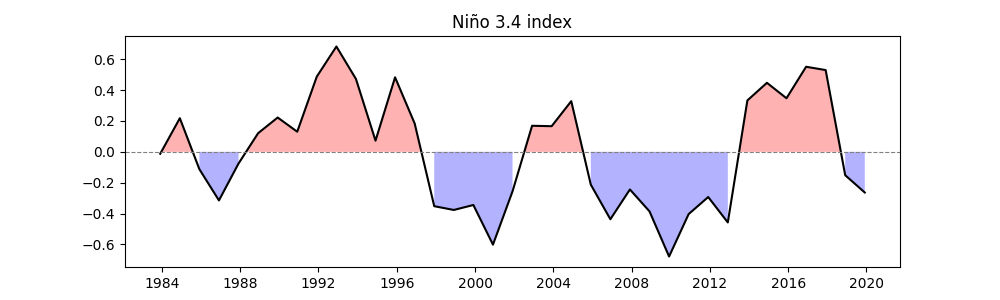
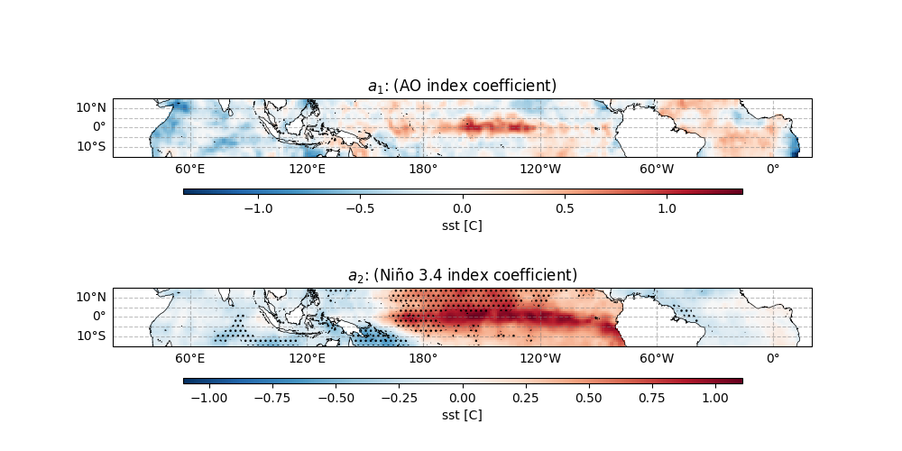

Note
Go to the end to download the full example code.
Multiple Variable Linear Regression¶
This documentation demonstrates a comprehensive analysis of sea surface temperature (SST) variability explained by two climate indices (AO and Niño 3.4) using multiple linear regression. The analysis covers data preparation, index calculation, regression modeling, and visualization of results.
Before proceeding with all the steps, first import some necessary libraries and packages
import xarray as xr
import cartopy.crs as ccrs
import matplotlib.pyplot as plt
import easyclimate as ecl
Two time ranges are defined to account for seasonal analysis with different base periods
time_range: Primary analysis period (1982-2020)time_range_plus1: Offset by one year for seasonal calculations
time_range = slice("1982-01-01", "2020-12-31")
time_range_plus1 = slice("1983-01-01", "2021-12-31")
The Arctic Oscillation index is calculated using:
Sea level pressure (SLP) data from the Northern Hemisphere
Seasonal mean calculation for December-January-February (DJF)
EOF analysis following Thompson & Wallace (1998) methodology
The resulting index is then subset to our analysis period.
slp_data = ecl.open_tutorial_dataset("slp_monmean_NH").slp
slp_data_DJF_mean = ecl.calc_seasonal_mean(slp_data, extract_season = 'DJF')
index_ao = ecl.field.teleconnection.calc_index_AO_EOF_Thompson_Wallace_1998(slp_data_DJF_mean)
index_ao = index_ao.sel(time = time_range)
index_ao
slp_monmean_NH.nc ━━━━━━━━━━━━━━━━━━━━ 100.0% • 3.3/3.3 MB • 66.4 MB/s • 0:00:00
/opt/hostedtoolcache/Python/3.11.15/x64/lib/python3.11/site-packages/xeofs/preprocessing/multi_index_converter.py:49: FutureWarning: Deleting a single level of a MultiIndex is deprecated. Previously, this deleted all levels of a MultiIndex. Please also drop the following variables: {'dim1', 'dim2'} to avoid an error in the future.
X_transformed = X_transformed.drop_vars(dim)
Plot the AO index
plt.figure(figsize=(10, 3))
ecl.plot.line_plot_with_threshold(index_ao)
plt.title("AO index")

Text(0.5, 1.0, 'AO index')
The Nino3.4 index is derived from:
Hadley Centre SST dataset
Seasonal mean for DJF period
Area averaging over the Niño 3.4 region (5°N-5°S, 170°W-120°W)
sst_data = ecl.open_tutorial_dataset("mini_HadISST_sst").sst
sst_data_DJF_mean = ecl.calc_seasonal_mean(sst_data, extract_season = 'DJF')
index_nino34 = ecl.field.air_sea_interaction.calc_index_nino34(sst_data_DJF_mean).sel(time = time_range)
index_nino34
mini_HadISST_sst.nc ━━━━━━━━━━━━━━━ 100.0% • 10.8/10.8 MB • 141.8 MB/s • 0:00:00
Plot the Niño 3.4 index
plt.figure(figsize=(10, 3))
ecl.plot.line_plot_with_threshold(index_nino34)
plt.title("Niño 3.4 index")

Text(0.5, 1.0, 'Niño 3.4 index')
The dependent variable for our regression is prepared as:
Seasonal mean SST for September-October-November (SON)
Using the offset time range to examine potential lagged relationships
sst_data_SON_mean = ecl.calc_seasonal_mean(sst_data, extract_season = 'SON').sel(time = time_range_plus1)
sst_data_SON_mean = sst_data_SON_mean.assign_coords(time=index_ao.time)
sst_data_SON_mean
The core analysis applies multiple linear regression to quantify how:
AO index (first predictor)
Niño 3.4 index (second predictor)
jointly explain spatial patterns of SON SST variability.
The function returns a dataset containing:
Regression coefficients (slopes) for each predictor
Intercept values
R-squared values (goodness of fit)
Statistical significance (p-values) for each parameter
The final visualization shows:
Top panel: Spatial pattern of AO influence on SON SST: Colors show regression coefficients, and Contours indicate statistically significant areas (p < 0.05)
Bottom panel: Spatial pattern of Niño 3.4 influence: Similar interpretation as top panel, and the central longitude is set to 200° for Pacific-centric viewing.
Key interpretation points:
Positive coefficients indicate SST increases with positive phase of the index
Negative coefficients indicate inverse relationships
Non-significant areas suggest no robust statistical relationship
fig, ax = ecl.plot.quick_draw_spatial_basemap(nrows=2 ,figsize = (10, 5), central_longitude=200)
result.slopes.sel(coef = 0).plot(
ax=ax[0],
transform=ccrs.PlateCarree(),
cbar_kwargs={"location": "bottom", "pad": 0.2, "aspect": 100, "shrink": 0.8},
)
ecl.plot.draw_significant_area_contourf(
result.slopes_p.sel(coef = 0),
ax = ax[0],
transform=ccrs.PlateCarree()
)
ax[0].set_title("$a_1$: (AO index coefficient)")
result.slopes.sel(coef = 1).plot(
ax=ax[1],
transform=ccrs.PlateCarree(),
cbar_kwargs={"location": "bottom", "pad": 0.2, "aspect": 100, "shrink": 0.8},
)
ecl.plot.draw_significant_area_contourf(
result.slopes_p.sel(coef = 1),
ax = ax[1],
transform=ccrs.PlateCarree()
)
ax[1].set_title("$a_2$: (Niño 3.4 index coefficient)")

Text(0.5, 1.0, '$a_2$: (Niño 3.4 index coefficient)')
Total running time of the script: (0 minutes 7.145 seconds)